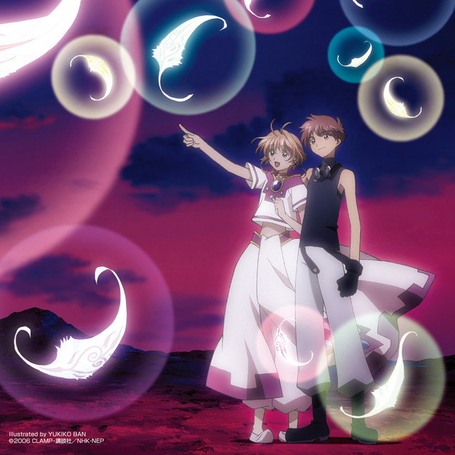

"Sis puella magica!" by 梶浦由記 (Yuki Kajiura) (Ft. Eri Itoh) is a song that embodies a mystical and enchanting atmosphere, with its Latin lyrics evoking a sense of mystery and otherworldly beauty. The title itself, which translates to "Sister Magical Girl," hints at themes of sisterhood, magic, and a fantastical realm where extraordinary forces are at play.

The ship of fools is an allegory, first appearing in Book VI of Plato's Republic, about a ship with a dysfunctional crew. The allegory is intended to represent the problems of governance prevailing in a political system not based on expert knowledge.